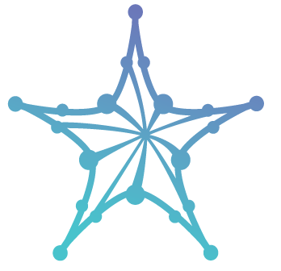
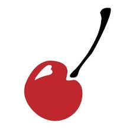

VOLUNTEER

STARS Celebration Conference
Philadelphia, PA; Washington D.C. | Multiple dates
- STARS Celebration Conference (September 2022)
- Ensured all Zoom recordings were enabled for panelists and speakers
- Registered attendees for check-in and supplied badges through registration desk duties
- Organized posters for research panels
- RESPECT and NSF CISE Meeting (May 2022)
- Ensured all Zoom recordings were enabled for panelists and speakers
- Registered attendees for check-in and supplied badges through registration desk duties
- Organized posters for research panels

Temple Dean of Students: Cherry Pantry
Philadelphia, PA | August 2020 - July 2022
- Inspected inventory for food and hygiene items
- Processed checkout orders for pantry users through inventory software
- Assisted in handling deliveries for pantry and/or storage
- Collaborated with Give + Go Green for clothing donations (May 2021)
Temple University Asian Students Association
Philadelphia, PA | Multiple dates
- Rocky Run (November 2019)
- Partook in the handling of hydration stations for runners
- Stowed away tables and registration booths after event
- Mid-Autumn Festival (September 2019)
- Participated in the dragon dance for festival activities
- Subaru Cherry Blossom Festival of Philadelphia (April 2019)
- Assisted in promoting the festival in front of ticket areas
City of Vancouver, Washington
Vancouver, WA | June 2019 - August 2019
- Surveyed local parks and natural areas, 5 total, for invasive ivy species and litter across
- Accumulated several pounds of ivy for removal